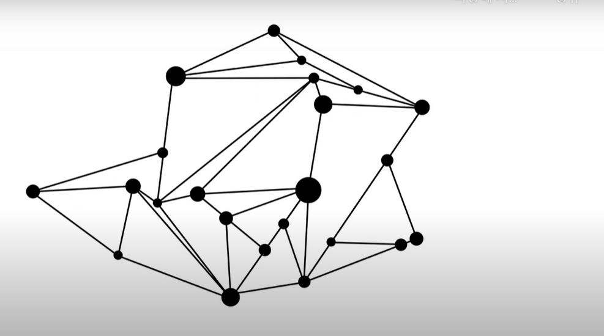

인터넷 VS 웹
다르다.
인터넷이 도로라면 웹은 도로 위를 달리는 차 한대
인터넷
1960년에 인터넷이 등장.
무려 30년이 지난 후에 웹이 등장.
1960년대의 화두 -> 핵
해당 시기의 통신시스템이 중앙집중적, 핵공격에 통신이 마비 -> 핵공격에도 끄떡없는 통신의 중요성 대두
-> 인터넷의 발명 -> 통신시스템이 분산되어 있음.

1990년 웹의 출현
웹의 고향? swiss
1980년
스위스제네바: CERN 유럽 입자 물리 연구소
LHC: 광입자 가속. 아주 가장 작은 입자를 보는 장치.
헥스포선
팀 버너스 리: enquire (무엇이든 물어보세요와 같은 책)
1990.10 웹페이지를 만드는 편집기
1990.12 info.cern.ch: 웹의 메소포타미아
primitive WEB
17. 인터넷을 여는 열쇠: 서버와 클라이언트
인터넷이 동작하는 가장 기본적인 원리
팀 버너스 리 두 개의 컴퓨터 장만
웹 브라우저, 웹 서버가 인터넷으로 연결되어 있음
웹 서버: http://info.cern.ch / index.html
웹 브라우저: http://info.cern.ch/index.html
웹 브라우저는 인터넷을 통해 해당 주소가 담겨 있는 웹 서버 쪽으로 통신 보냄.
웹 서버는 하드디스크에서 index.html를 찾아낸 후 웹 브라우저 쪽으로 재전송.
웹 브라우저가 웹서버에서 만든 html을 해석한 후 다시 화면에 띄움.
웹 브라우저: 정보 요청 = request / client, 웹 서버: 정보 응답 = response / server
ex) game client / game server, chatting client / chatting server
업체에 대행하는 것: web hosting / 직접 설치하는 것: web server
우리가 공부를 하는 최종적인 목표는 이해하는 것이 아니라 익숙해지는 것.
웹서버와 운영
18. 웹서버 운영 (github를 이용한 호스팅)
웹서버를 빌려주는 회사: 웹호스팅 업체
내 컴퓨터에 다른 사람이 접근할 수 있게 하고 싶지만 불가능.
why? 웹서버가 설정되어 있지 않아서. 직접 설정하는 건 힘드니 웹 호스팅회사에 맡김.
host: 인터넷에 접속되어 있는 컴퓨터 한 대 한 대
hosting
webhosting
static web hosting
dynamic web hosting
현재까지 배운 걸로만 웹페이지를 만들 때 추천 웹호스팅 검색어: free static web hosting
https://www.bitballoon.com/
http://neocities.org/
Amazon S3
Google Cloud Storage
Azure Blob
19. 웹서버 운영하기 - 웹서버 소개
제대로 작동하는 방법은 한가지지만 제대로 작동하지 않는 방법은 수십가지.
하나의 문제를 해결하는 데에는 며칠이 걸리지만 그 하나의 문제를 해결하는 과정에서 수많은 지식과 경험을 보답으로 얻게 됨.
apache 설치 필요
윈도우, mac os, linux마다 설치 방법이 다름
how to install apache http server (os) 2021
20. 윈도우로 웹서버 운영하기 1 -웹서버 설치
how to install apache http server windows, english
Bitnami WAMP Stack
bitnami 매니저 위치: %bitnami_home%/
21. 윈도우로 웹서버 운영하기 2 - 웹서버와 HTTP
http://127.0.0.1/index.html
127.0.0.1 => Internet Protocol Address 중에서도 웹 브라우저가 설치되어 있는 각자의 웹 서버를 가리킴.
웹 브라우저가 자신의 컴퓨터에 설치되어 있는 자신의 웹 서버에 접속해서 index.html을 원해
http:// => 웹 브라우저가 웹 서버에게 요청하는 것. 그러면 웹 서버가 해당 요청을 웹브라우저에게 전송해주는 것
(http: hyper text transper protocol: 웹페이지를 웹서버와 웹브라우저가 주고 받기 위한 약속)
file:// => 웹 서버는 개입 X, 웹 브라우저가 직접 html에 접근해서 불러옴
%bitnami_home%/apache2/htdocs/index.html
(ht: hypertext documnet)
한 대의 컴퓨터 안에 web browser / web server 함께 존재
22. 윈도우로 웹서버 운영하기 3 - 웹브라우저와 웹서버 통신
두 대의 컴퓨터에서 서로 웹페이지를 주고받는 방식
IPv4 주소: 172.30.1.57
같은 네트워크 안에 있어야 함.
전세계의 인터넷이 우리 집에 있는 웹서버에 접속하는 방법은 수업 범위와는 다소 벗어남.
5. 마치며
22. 수업을 마치며(본질)
수업 진도가 진행될수록 중요도는 떨어지고 난이도는 올라간다.
수업 초반은 교양, 수업 후반은 직업
사람이 잘하는 일과 기계가 잘하는 일.
기계가 잘하는 일을 사람이 하고 있을 때 우리는 답답함과 절망감을 느낄 수 있다.
23. 수업을 마치며 2
공부만 하고 공부한 것을 사용하지 않으면 나중에는 머리가 복잡해져 어떤 것부터 해야할 지 모르게 된다.
복잡함에 대한 이야기
눈에 보이지 않는 복잡함
테스트횟수: 2
테스트횟수: 4
테스트횟수: 8
체크박스가 50개라면 테스트 횟수는 ? 2의 50승 => 천조개의 경우의 수
눈에 보이는 것은 50개의 체크 박스지만 보이지 않는 천조개의 복잡함이 숨어 있다.
개념을 알게 된다는 것은 체크박스가 늘어난다는 것.
잠깐 멈춰서 배운 것을 가지고 스스로 한계에 직면해보라. 그리고 충분히 절망해보라. 절망감이 충분히 성숙했을때 그때가 공부할 때, 그래야 공부가 구원자가 된다.